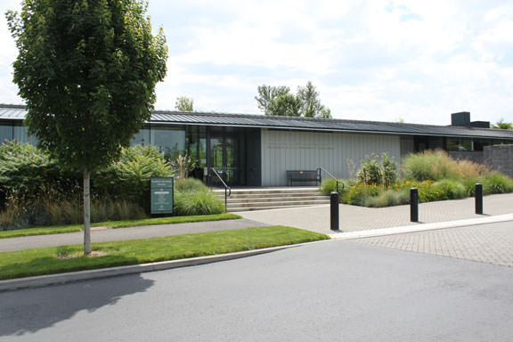
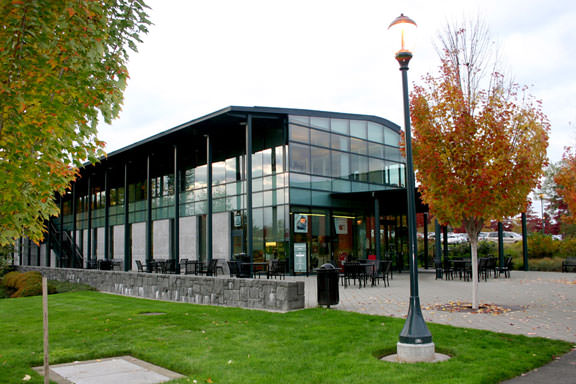
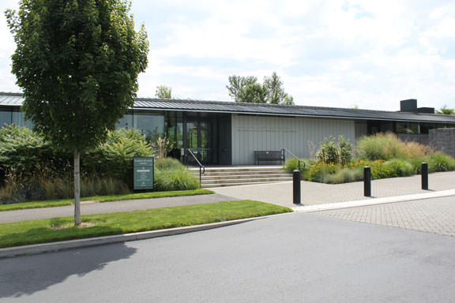
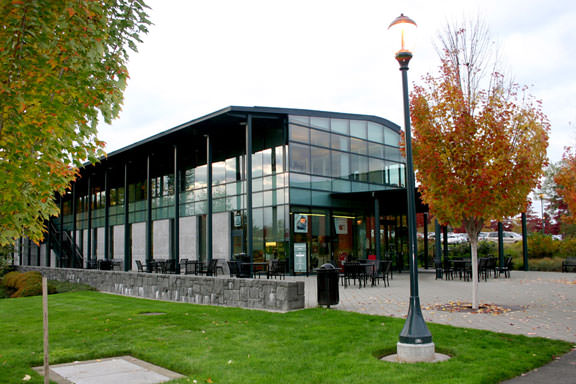

Biological Sciences
Dawn Banker Ph.D., Clinical Associate Professor
Phone: 360-546-9478
Location: VSCI 230
Email: bankerd@vncouver.wsu.edu
Dr. John Bishop, Professor
Phone: 360-546-9612
Location: VSCI 230
Email: bishopj@vancouver.wsu.edu
Ruth Phillips, Adjunct Research Professor
Phone: 360-546-9505
Location: VSCI 215
Email: phillipsr@vancouver.wsu.edu
Dr. Christine Portfors, Associate Professor
Phone: 360-546-9434
Location: VCLS 208 M
Email: portfors@vancouver.wsu.edu
Dr. Gretchen Rollwagon-Bollens, Clinical Associate Professor
Phone: 360-546-9115
Location: VSCI 230 A
Email: rollboll@vancouver.wsu.edu
Dr. Cheryl Schultz, Associate Professor
Phone: 360-546-9525
Location: VSCI 230
Email: schultzc@vancouver.wsu.edu
Jenefer DeKoning Ph.D., Scientific Assistant, Adjunct Professor
Phone: 360-546-9504
Location: VSCI 213
Email: dekoning@vancouver.wsu.edu
Paul Joseph, Chemistry Instructer
Phone: 360-910-3201
Location: VLIB 21 L
Email: paul.joseph@pcc.edu
Bob Blackman, Professional Worker
Phone: 360-546-9627
Location: VSCI 230
Email: blackman@vancouver.wsu.edu
Diane DiVittorio, Undergrad Acedemic Advisor
Phone: 360-546-9624
Location: VSCI 130 C
Email: diane.divittorio@vancouver.wsu.edu
Dawn Freeman, Laboratory Technician
Phone: 360-546-9628
Location: VSCI 110
Email: dmfreeman@vancouver.wsu.edu
Sherry Swayze, Senior Secretary
Phone: 360-546-9636
Location: VSCI 230 C
Email: sswayze@vancouver.wsu.edu
Education
Margaret H. Bates, Director of Field Experiences/Placement Coordinator
Phone: 360-546-9678
Location: VUB 364
Email: maggie.bates@vancouver.wsu.edu
Dr. June Canty, Professor
Phone: 360-546-9108
Location: VUB 347
Email: jcanty@vancouver.wsu.edu
Deanna Day, Associate Professor
Phone: 360-546-9667
Location: VUB 340
Email: dday-wiff@vancouver.wsu.edu
Dr. William T. Doenecke, University Field Supervisor and Adjunct Professor
Phone: 360-546-2658
Location: VUB 320
Email: wsubilldoenecke@comcast.net
Michael Dunn, Associate Professor of Special Education & Literacy
Phone: 360-546-9662
Location: VUB 331
Email: dunnmi@vancouver.wsu.edu
Gisela Ernst-Slavit Ph.D., Professor and ELL Endorsement Coordinator
Phone: 360-546-9659
Location: VUB 326
Email: gernst@vancouver.wsu.edu
Susan Finley Ph.D., Associate Professor and MIT Elementary Program Chair
Phone: 360-546-9649
Location: VUB 328
Email: finley@vancouver.wsu.edu
Dr. Susan Greenwood Ford, University Field Supervisor
Phone: 360-574-0706
Location: VUB 320
Email: sford1119@comcast.net
Kristin Shawn Huggins Ph.D., Assistant Professor of Educational Learning
Phone: 360-546-9410
Location: VUB 353
Email: k.huggins@vancouver.wsu.edu
Elaine Jones, Instructor and Field Supervisor
Phone: 360-546-9360
Location: VUB 317
Email: eljones@vancouver.wsu.edu
Anne Kennedy Ed.D., K-12 STEM Education Partnership Coordinator
Phone: 360-907-1013
Location: VUB 349
Email: anne.kennedy@esd112.org
Stephen B. Kucer Ph.D., Associate Professor of Language and Literacy Education and Reading Endorsement Program Chair
Phone: 360-546-9429
Location: VUB 334
Email: skucer@vancouver.wsu.edu
Kristin Lesseig Ph.D., Mathematics Education Assistant Professor
Phone: 360-546-9466
Location: VUB 345
Email: kristin.lesseig@vancouver.wsu.edu
Tonda Liggit Ph.D., English Language Learning Assistant Professor
Phone: 360-546-9204
Location: VUB 341
Email: tonda_liggett@vancouver.wsu.edu
Christine Ludwig M.Ed., Clinical Faculty and Elementary Education Program Chair
Phone: 360-546-9479
Location: VUB 343
Email: cmludwig@vancouver.wsu.edu
Linda Mabry Ph.D., Professor
Phone: 360-546-9428
Location: VUB 352
Email: mabryl@vancouver.wsu.edu
Nancy McKibbin M.A.T., Clinical Faculty and Field Supervisor
Phone: 360-546-9432
Location: VUB 318
Email: nancy_mckibbin@vancouver.wsu.edu
Tamara Holmlund Nelson, Science Education Associate Professor
Phone: 360-546-9663
Location: VUB 324
Email: tnelson1@vancouver.wsu.edu
Antoinette 'Tonci' Pavkovich, Field Experience Supervisor and Instructor
Phone: 360-546-9433
Location: VUB 322
Email: tonci@vancouver.wsu.edu
Richard Sawyer Ed.D., Associate Professor and Program Chair
Phone: 360-546-9658
Location: VUB 332
Email: rsawyer@vancouver.wsu.edu
Gay Selby Ed.D., Clinical Professor and Educational Leadership Program Chair
Phone: 360-546-9668
Location: VUB 363
Email: gselby@vancouver.wsu.edu
Dr. David Slavit, Distinguished Mathematics Professor
Phone: 360-546-9653
Location: VUB 350
Email: dslavit@wsu.edu
Suzanne Smith Ph.D., Director and Associate Professor
Phone: 360-546-9714
Location: VMCB 201
Email: smithsu@vancouver.wsu.edu
Dr. Angie Deuel Foster, Post Doc
Phone: 360-546-9123
Location: VMMC 112
Email: fostera@vancouver.wsu.edu
Dr. Donna Telep-Manclark, University Field Supervisor and Instructor
Phone: 360-896-6624
Location: VUB 232
Email: dtelep-manclark@vancouver.wsu.edu
Shannon Van Horn Ed.D. NCSP, Adjunct Faculty
Phone: 360-936-2182
Location: VUB 320
Email: shannon@workshed.com
Debra Barnett, Principal Assistant
Phone: 360-546-9660
Location: VUB 300
Email: debarnett@vancouver.wsu.edu
Elizabeth Benner MA, Academic Coordinator
Phone: 360-546-9673
Location: VUB 307
Email: elizabeth.benner@vancouver.wsu.edu
Shannon Cassidy, Clerical Assistant
Phone: 360-546-9214
Location: VUB 300
Email: s.ray-cassidy@vancouver.wsu.edu
Jessica de Meurers, Clerical Assistant
Phone: 360-546-9214
Location: VUB 300
Email: jessica.wienert@email.wsu.edu
Roxanne Doenecke, Secretary
Phone: 360-546-9652
Location: VUB 300
Email: rdoenecke@vancouver.wsu.edu
Kathleen Galyan, Program Advising Assistant
Phone: 360-546-9695
Location: VUB 300
Email: kgalyan@vancouver.wsu.edu
Marion Gust B.A., Clerical Assistant and Faculty Support
Phone: 360-546-9100
Location: VUB 300
Email: mgust@vancouver.wsu.edu
Jillane M. Homme M.P.A., Academic Coordinator for Graduate Programs in Education
Phone: 360-546-9075
Location: VUB 308
Email: jhomme22@vancouver.wsu.edu
Kristen L. Pratt, Instructor/Teaching Assistant
Phone: 360-546-9654
Location: VUB 348
Email: klpratt@wsu.edu
English
Wendy Dasler Johnson, Professor and Coordinator
Phone: 360-546-9648
Location: VMMC 102 R
Email: wjohnson1@vancouver.wsu.edu
Dr. Desiree Hellegers, Associate Professor, Director, Acedemic Coordinator
Phone: 360-546-9643
Location: VMMC 202 V
Email: desiree.hellegers@vancouver.wsu.edu
Dr. Thabiti Lewis, Associate Professor
Phone: 360-546-9256
Location: VMMC 102 M
Email: thabiti@vancouver.wsu.edu
David Menchaca, Assistant Professor
Phone: 360-546-9176
Location: VMMC 102 F
Email: menchaca@wsu.edu
Pavithra Narayanan, Associate Professor
Phone: 360-546-9732
Location: VMMC 202 F
Email: pavitraa@vancouver.wsu.edu
Wendy Olson, Assistant English Professor and Director of Composition
Phone: 360-546-9513
Location: VMMC 102 K
Email: wmolson@vancouver.wsu.edu
Dr. Kandy S. Robertson, Clinical Assosciate Professor and Writing Center Coordinator
Phone: 360-546-9651
Location: VLIB 203 B
Email: kandy_robertson@vancouver.wsu.edu
Carol Siegel, Professor
Phone: 360-546-9641
Location: VMMC SS202
Email: siegel@vancouver.wsu.edu
Howard Aaron, Lecturer
Phone: 503-816-2742
Location: VMMC 102
Email: howard823@comcast.net
Craig Buchner, Adjunct Faculty
Phone: 360-546-9425
Location: VMMC 102 P
Email: craig.buchner@vancouver.wsu.edu
Joe Czech, Instructer
Phone: 360-604-3700
Location: VMMC 000
Email: Joe.Czech@evergreenps.org
Logan Forehand, Instructer
Phone: 503-314-5683
Location: VMMC 102 P
Email: logan.forehand@wsu.edu
Ellen C. Franklin M.A., Adjunct Faculty
Phone: 360-546-9441
Location: VMMC 102 P
Email: efranklin@vancouver.wsu.edu
Andrew L. Giarelli Ph.D., Adjunct Instructer
Phone: 360-546-9425
Location: VMMC 102 P
Email: andrew_giarelli@vancouver.wsu.edu
Regina McMenomy Ph.D., Instructer
Phone: 360-546-9425
Location: VMMC 102 P
Email: mailto:emcmenomy@vancouver.wsu.edu
Katherine Olson, Adjunct
Phone: 360-546-9260
Location: VMMC Reception
Email: kjolson@vancouver.wsu.edu
Brain Schlosser M.A., Adjunct Faculty and Lead Consultant
Phone: 360-546-9650
Location: VLIB 203
Email: brianstribe@vancouver.wsu.edu
Annette Bradstreet, Program Assistant
Phone: 360-546-9640
Location: VMMC 102
Email: annette.bradstreet@vancouver.wsu.edu
Shellynda Michalek, Acedemic Coordinator Support
Phone: 360-546-9106
Location: VSCI 130
Email: michaleksj@vancouver.wsu.edu
Teresa Phimister, Acedemic Coordinator
Phone: 360-546-9664
Location: VSCI 130
Email: phimister@vancouver.wsu.edu
Mary Jo Klinker, Graduate Student/Instructor
Phone: 360-546-9425
Location: VMMC 207
Email: mklinker@wsu.edu
Justin Obara, Graduate Student/Instructor
Phone: 509-432-9227
Location: VMMC 207
Email: justin.obara@wsu.edu
Michael Sutcliffe, Graduate Student
Phone: 360-546-9227
Location: VMMC 207
Email: msut@wsu.edu
Sky Wilson, Teaching Assistant
Phone: 360-223-1397
Location: VMCB 220
Email: sky.wilson519@gmail.com
Environment
Dr. Maichael S. Berger, Biology Instructor
Phone: 360-546-9347
Location: VSCI 130 L
Email: msberger@vancouver.wsu.edu
Dr. Steve Bollens, Director and Professor
Phone: 360-546-9116
Location: VSCI 230 Q
Email: sbollens@vancouver.wsu.edu
M. Jahi Chappell Ph.D., Assistant Professor
Phone: 360-546-9413
Location: VSCI 230 P
Email: m.jahi.chappell@vancouver.wsu.edu
John Harrison Ph.D., Associate Professor
Phone: 360-546-9210
Location: VSCI 230 B
Email: john_harrison@vancouver.wsu.edu
Stephen Harrison, Assistant Professor
Phone: 360-546-9268
Location: VSCI 230 L
Email: steve_henderson@vancouver.wsu.edu
Dr. Gretchen Rollwagon-Bollens, Clinical Associate Professor
Phone: 360-546-9115
Location: VSCI 230 A
Email: rollboll@vancouver.wsu.edu
Brian Tissot Ph.D., Associate Director and Professor
Phone: 360-546-9611
Location: VSCI 230 M
Email: tissot@vancouver.wsu.edu
Susan Circone Ph.D., Adjunct Faculty
Phone: 360-546-9630
Location: VLIB 210 L
Email: scircone@vancouver.wsu.edu
Dr. Jose Vazquez, Adjunct Faculty
Phone: 360-546-9630
Location: VLIB 201 H
Email: jose.vazquez-bello@vancouver.wsu.edu
Diane DiVittorio, Undergraduate Acedemic Advisor
Phone: 360-546-9624
Location: VSCI 130 C
Email: diane.divittorio@vancouver.wsu.edu
Sherry Swayze, Secretary Senior
Phone: 360-546-9636
Location: VSCI 230 C
Email: sswayze@vancouver.wsu.edu
Foreign languages and Cultures
Joan Grenier-Winther, French Professor and Associate Chair
Phone: 360-546-9354
Location: VCLS 208 S
Email: grenierj@vancouver.wsu.edu
Cassandra Gulam M.A., Spanish Language and Culture Professor
Phone: 360-546-9488
Location: VMMC 202 P
Email: casgulam@vancouver.wsu.edu
María Lee-López M.A., Spanish Language and Culture Instructor
Phone: 360-546-9488
Location: VMMC 202 P
Email: lee-lopez@vancouver.wsu.edu
Jorge Guadalupe Lizárraga, Instructor
Phone: 360-546-9445
Location: VMMC 102 P
Email: jlizarraga@vancouver.wsu.edu
Jessica McKee, Spanish Class Coordinator and Instructor
Phone: 360-546-9488
Location: VCLS 208 J
Email: jessica_mckee@vancouver.wsu.edu
Marie-Pierre Wolfe, Adjunct Faculty
Phone: 503-725-8497
Location: VMMC 102 P
Email: mariepwolfe@yahoo.fr
Willow Zheng, Chinese language and Culture Adjunct Instructor
Phone: 360-546-9445
Location: VMMC 102 P
Email: willow.zheng@vancouver.wsu.edu
Shellynda Michalek, Acedemic Coordinator Support
Phone: 360-546-9106
Location: VSCI 130
Email: michaleksj@vancouver.wsu.edu
Teresa Phimister, Acedemic Coordinator
Phone: 360-546-9664
Location: VSCI 130
Email: phimister@vancouver.wsu.edu
Doug Winther, Director
Phone: 360-546-9141
Location: VMMC 115 A
Email: wintherd@wsu.edu
History
Dr. Steven M. Fountain, Clinical Assistant Professor
Phone: 360-546-9738
Location: VCLS 208 T
Email: sfountain@vancouver.wsu.edu
Dr. Luz María Gordillo
Phone: 360-546-9099
Location: VMMC 202 U
Email: gordillo@wsu.edu
Dr. Candice Goucher, Professor
Phone: 360-546-9469
Location: VMMC 202 K
Email: cgoucher@vancouver.wsu.edu
Jorge Guadalupe Lizárraga, Instructor
Phone: 360-546-9445
Location: VMMC 102 P
Email: jlizarraga@vancouver.wsu.edu
Dr. Laurie Mercier, Distinguished Professor
Phone: 360-546-9646
Location: VMMC 102 V
Email: lmercier@vancouver.wsu.edu
Dr. Sue Peabody, Professor and Associate Chair
Phone: 360-546-9647
Location: VMMC 202 D
Email: speabody@vancouver.wsu.edu
Dr. Jacqueline Peterson, Professor Emerita
Phone: 360-546-9644
Location: VMMC 202 G
Email: jpeterson1@vancouver.wsu.edu
Dr. Xiuyu Wang, Assistant Professor
Phone: 360-546-9174
Location: VMMC 102 X
Email: xiuyuwang@vancouver.wsu.edu
Dr. NK Harrington, Professor
Phone: 360-546-9640
Location: VMMC 102 P
Email: nHarrington@wsu.edu
Donna L. Sinclair, Instructor
Phone: 360-771-9310
Location: VMMC 102 P
Email: donna.sinclair@vancouver.wsu.edu
Dr. Aaron D. Whelchel, Instructor
Phone: 360-546-9640
Location: VMMC 207
Email: adwhelchel@gmail.com
Linda Campbell, Secretary Senior
Phone: 360-546-9441
Location: VMMC 102
Email: lk_campbell@vancouver.wsu.edu
Shellynda Michalek, Acedemic Coordinator Support
Phone: 360-546-9106
Location: VSCI 130
Email: michaleksj@vancouver.wsu.edu
Lindy Volk, Acedemic Coordinator
Phone: 360-546-9475
Location: VSCI 130
Email: lsakamoto@vancouver.wsu.edu
Library
Circulation Desk
Phone: 360-546-9680
Location: VLIB 100
Email: library@vancouver.wsu.edu
Reference Desk
Phone: 360-546-9686
Location: VLIB 100
Email: library@vancouver.wsu.edu
Marianne Bash, Reference Librarian
Phone: 360-546-9681
Location: VLIB 160
Email: mbash@vancouver.wsu.edu
Nicole Campbell, Interim Library Director
Phone: 360-546-9687
Location: VLIB 160 E
Email: nmcampbell@vancouver.wsu.edu
Karen R. Diller M.L.I.S., Associate Library Director
Phone: 360-546-9179
Location: VLIB 160 D
Email: diller@vancouver.wsu.edu
Kathleen Carlisle Fountain, Head of Collection Development
Phone: 360-546-9694
Location: VLIB 160 F
Email: kfountain@vancouver.wsu.edu
Linda Frederiksen, Head of Access Services
Phone: 360-546-9683
Location: VLIB 160 H
Email: lfrederiksen@vancouver.wsu.edu
Kerry Hodge, Technical Services Supervisor
Phone: 360-546-9684
Location: VLIB 160
Email: hodge@vancouver.wsu.edu
Dena Keller, Circulation and Reserves Supervisor and Summit Coordinator
Phone: 360-546-9685
Location: VLIB 160 A
Email: dkeller@vancouver.wsu.edu
Diane Manning, Interlibrary Loan Specialist
Phone: 360-546-9154
Location: VLIB 160
Email: dmanning@wsu.edu
Sue Phelps, Reference Librarian
Phone: 360-546-9178
Location: VLIB 160
Email: asphelps@vancouver.wsu.edu
Maria Power, Reference Assistant
Phone: 360-546-9681
Location: VLIB 160
Email: maria.power@wsu.edu
Nicholas Schiller MLS, Systems & Intruction Librarian
Phone: 360-546-9171
Location: VLIB 160 J
Email: schiller@vancouver.wsu.edu
Robert Schimelpfenig, Archives Specialist
Phone: 360-546-9249
Location: VLIB 160
Email: schimo@vancouver.wsu.edu
Patrick Wohlmut, Reference Librarian
Phone: 360-546-9681
Location: VLIB 160
Email: patrick.wohlmut@vancouver.wsu.edu
Leslie Wykoff MLS, Librarian Emerita
Phone: 360-546-9680
Location: VLIB 160
Email: leslie.wykoff@vancouver.wsu.edu
Molly Zalman Winters, Administrative Assistant
Phone: 360-546-9689
Location: VLIB 160
Email: molly.zalmanwinters@vancouver.wsu.edu
Mathematics
Alexander Dimitrov, Ph.D., Assistant Professor
Phone: 360-546-9385
Location: VUB 102 C
Email: alex.dimitrov@vancouver.wsu.edu
Paul Krouss Ph.D., Instructor
Phone: 360-546-9384
Location:VUB 102 E
Email: pkrouss (at) vancouver (dot) wsu (dot) edu
Dr. Eric Mapes, Instructor
Phone: 360-546-9261
Location: VUB 102 D
Email: eric_mapes@vancouver.wsu.edu
Joe Randall, Instructor
Phone: 360-546-9344
Location: VUB 102 B
Email: joseph_randall@vancouver.wsu.edu
Dr. David Slavit
Phone: 360-546-9653
Location: VUB 350
Email: dslavit@wsu.edu
Cindy Jager, Adjunct Faculty
Phone: 360-546-9386
Location: VLIB 210 H
Email: cjager@vancouver.wsu.edu
Bill Kring, Adjunct Faculty
Phone: 360-546-9386
Location: VLIB 210 H
Email: billkring@vancouver.wsu.edu
Brain Manning, Adjunct Faculty
Phone: 360-546-9386
Location: VLIB 210 H
Email: brianmanning@vancouver.wsu.edu
Arthur Placek, Adjunct Instructor
Phone: 708-738-3307
Location: VUB 102
Email: aplacek.wsu.edu
Dr. Rick Simmons, Instructor
Phone: 360-546-9386
Location: VLIB 210 H
Email: rick.simmons@vancouver.wsu.edu
Diane DiVittorio, Undergraduate Acedemic Advisor
Phone: 360-546-9478
Location: VSCI 230 J
Email: diane.divittorio@vancouver.wsu.edu
Mechanical Engineering
Linda (Xiaolin) Chen Ph.D., Associate Professor
Phone: 360-546-9117
Location: VECS 301 U
Email: chenx@vancouver.wsu.edu
Hakan Gurocak, Director
Phone: 360-546-9637
Location: VWCS 301 V
Email: hgurocak@vancouver.wsu.edu
Dave (Dae-Wook) Kim Ph.D., Associate Professor
Phone: 360-546-9081
Location: VSCI 130 J
Email: kimd@wsu.edu
Yoon Jo Kim Ph.D., Assistant Professor
Phone: 360-546-9184
Location: VECS 301 Q
Email: yoonjo.kim@wsu.edu
Hamid Rad Ph.D., Instructor
Phone: 360-546-9208
Location: VECS 301 L
Email: hamidrad@vancouver.wsu.edu
Stephen A. Solovitz Ph.D., Assistant Professor
Phone: 360-546-9253
Location: VECS 301 P
Email: stevesol@vancouver.wsu.edu
Jie Xu Ph.D., Assistant Professor
Phone: 360-546-9144
Location: VECS 301 K
Email: jie.xu@wsu.edu
Wei Xue Ph.D., Assistant Professor
Phone: 360-546-9250
Location: VECS 301 W
Email: wxue@wsu.edu
Troy Dunmire, Engineering Tech
Phone: 360-546-9287
Location: VSCI 157
Email: tdunmire@vancouver.wsu.edu
Kristine M. Olsen, Administrative Manager
Phone: 360-546-9092
Location: VECS 201 E
Email: kristine.olsen@wsu.edu
Chad Swanson, Engineering Tech
Phone: 360-546-9481
Location: VSCI 157
Email: chad_swanson@vancouver.wsu.edu
Nursing
Linda Dekker MN RN CNM APRN-BC, RN to BSN Program Intructor, advisor and Coordinator for N465 courses
Phone: 360-546-9269
Location: VLIB 210 P
Email: ldekker@vancouver.wsu.edu
Julie DeWitt-Kamada, Clinical Assistant Professor
Phone:
Location: 360-564-9349
Email: jdewitt@vancouver.wsu.edu
Dawn Doutrich Ph.D. CNS RN, Associate Professor
Phone: 360-546-9646
Location: VLIB 210 W
Email: doutrich@vancouver.wsu.edu
Linda Eddy Ph.D. RN CPNP, Associate Professor
Phone: 360-546-9625
Location: VLIB 210 J
Email: leddy@vancouver.wsu.edu
Dr. Ginny W. Guido, Nursing Regional Director and Assistant Dean
Phone: 360-546-9244
Location: VLIB 210 N
Email: ginny_guido@vancouver.wsu.edu
Renee Hoeksel Ph.D. RN, RN-BSN Program Assistant Dean
Phone: 360-546-9621
Location: VLIB 210 V
Email: rhoeksel@vancouver.wsu.edu
Sarah Kooienga Ph.D. FNP, Assistant Professor
Phone: 360-546-9278
Location: VLIB 210 X
Email: skooienga@vancouver.wsu.edu
Christine Ludwig M.Ed., Clinical Faculty and Elementary Education Program Chair
Phone: 360-546-9479
Location: VUB 343
Email: cmludwig@vancouver.wsu.edu
Melody Rasmor RN MSN FNP COHN-S, Clinical Assistant Professor
Phone: 360-546-9619
Location: VLIB Office 'K'
Email: rasmor@vancouver.wsu.edu
Dawn Rondeau, Assistant Professor
Phone: 360-546-9395
Location: VLIB 210 Q
Email: drondeau@vancouver.wsu.edu
Janet Spuck, Senior Instructor
Phone: 360-546-9623
Location: VLIB 210 E
Email: jspuck@vancouver.wsu.edu
Kathleen Johns, Office Assistant
Phone: 360-546-9752
Location: VLIB 210
Email: kathleen.johns@vancouver.wsu.edu
Barbara M. Maddox, Clinical Coordinator
Phone: 360-546-9164
Location: VLIB 210 Y
Email: barbara.maddox@vancouver.wsu.edu
Jenny Schrock, Academic Coordinator
Phone: 360-546-9618
Location: VLIB 210 C
Email: schrock@vancouver.wsu.edu
Susan Shaw, Office Supposrt Supervisor
Phone: 360-546-9473
Location: VLIB 210
Email: susan.shaw@vancouver.wsu.edu
Political Science
Dana Lee Baker Ph.D., Associate Professor and Director of Program of Public Affairs
Phone: 360-546-9125
Location: VMMC 202 N
Email: bakerdl@vancouver.wsu.edu
Carolyn Long Ph.D., Associate Professor of Political Science and Associate Director of Liberal Arts
Phone: 360-546-9737
Location: VMMC 102 A
Email: coelong@vancouver.wsu.edu
Mark Stephen Ph.D., Associate Professor
Phone: 360-546-9467
Location: VCLS 208 Q
Email: stephanm@vancouver.wsu.edu
Paul Thiers Ph.D., Associate Professor
Phone: 360-546-9466
Location: VMMC 102 S
Email: pthiers@vancouver.wsu.edu
James C. Foster, Adjunct Professor
Phone: 360-546-9097
Location: VMMC 210
Email: james.foster@osucascades.edu
Travis Miller, Adjunct Professor
Phone: 360-546-9445
Location: VMMC 102 P
Email: travis.l.miller@vancouver.wsu.edu
Annette Bradstreet, Program Assistant
Phone: 360-546-9640
Location: VMMC 102 P
Email: annette.bradstreet@vancouver.wsu.edu
Shellynda Michalek, Acedemic Coordinator Support
Phone: 360-546-9106
Location: VSCI 130
Email: michaleksj@vancouver.wsu.edu
Lindy Volk, Acedemic Coordinator
Phone: 360-546-9745
Location: VSCI 130
Email: isakamoto@vancouver.wsu.edu
Ellen Rogers MBA MPA, Graduate Student Instructor
Phone: 360-921-4235
Location: VMMC 207
Email: ellen.rogers@email.wsu.edu
Psychology
Dr. Art Blume, Professor
Phone: 360-546-9414
Location: VCLS 208 L
Email: art.blume@vancouver.wsu.edu
Dr. Allison Coffin, Assistant Professor
Phone: 360-546-9748
Location: VCLS 208 U
Email: allison.coffin@wsu.edu
Dr. Armando X. Estrada, Assistant Professor
Phone: 360-546-9716
Location: VCLS 280 C
Email: aestrada1@vancouver.wsu.edu
Dr. J.P. Garofalo, Associate Proffesor and Associate Chair
Phone: 360-546-9717
Location: VCLS 208 E
Email: jgarofalo@vancouver.wsu.edu
Dr. Randall Kleinhesselink, Associate Professor
Phone: 360-546-9723
Location: VCLS 208 U
Email: rkleinhesselink@vancouver.wsu.edu
Stephen Lakatos Ph.D., Associate Professor
Phone: 360-546-9743
Location: VCLS 208 A
Email: lakatos@vancouver.wsu.edu
Dr. Michael Morgan, Professor
Phone: 360-564-9726
Location: VCLS 208 G
Email: mmmorgan@vancouver.wsu.edu
Dr. Tahira M. Probst, Professor
Phone: 360-546-9746
Location: VCLS 208 J
Email: probst@vancouver.wsu.edu
Karen Schmaling Ph.D., Vice Chancellor for Acedemic Affairs
Phone: 360-546-9583
Location: VDEN 208
Email: Karen.Schmaling@vancouver.wsu.edu
Elizabeth Soliday Ph.D., Associate Professor
Phone: 360-546-9727
Location: VCLS 208 P
Email: esoliday@vancouver.wsu.edu
Elizabeth Whitchurch Ph.D., Research Assistant
Phone: 360-546-9090
Location: VCLS 208
Email: liz.whitchurch@wsu.edu
Katie Witkiewitz Ph.D., Assistant Professor
Phone: 360-546-9403
Location: VCLS 208 R
Email: katie.witkiewitz@vancouver.wsu.edu
Kathryn Becker Blease, Adjunct Faculty
Phone: 360-546-9720
Location: VCLS 160 G
Email: kbecker-blease@vancouver.wsu.edu
Enrique Brouwer M.A., Adjunct Faculty
Phone: 585-729-7846
Location: VCLS Main Office
Email: enrique.brouwer@vancouver.wsu.edu
Bill Griesar Ph.D., Adjunct Faculty
Phone: 360-546-9720
Location: VCLS 160 G
Email: bgriesar@pacifier.com
Alyssa Dart, Acedemic Coordinator
Phone: 360-546-9451
Location: VSCI 103 D
Email: darta@vancouver.wsu.edu
Janet DeWitt, Senior Secretary
Phone: 360-546-9720
Location: VCLS 208
Email: jldewitt@vancouver.wsu.edu
Shellynda Michalek, Acedemic Coordinator Support
Phone: 360-546-9106
Location: VSCI 130
Email: michaleksj@vancouver.wsu.edu
Jill Gjerde M.A., Graduate Student
Phone: 360-546-9720
Location: VCLS 208 V
Email: jill_gjerde@wsu.edu
Lixin Jiang, Graduate Student
Phone: 360-546-9720
Location: VCLS 108
Email: lixin.jiang@email.wsu.edu
Jason Potwora, Graduate Student
Phone: 360-546-9404
Location: VCLS 108
Email: Jpotwora@wsu.edu
Public Affairs
Dana Lee Baker Ph.D., Associate Professor and Director of Program of Public Affairs
Phone: 360-546-9125
Location: VMMC 202 N
Email: bakerdl@vancouver.wsu.edu
M. Jahi Chappell Ph.D., Assistant Professor of Environmental Science and Justice
Phone: 360-546-9413
Location: VSCI 230 P
Email: m.jahi.chappell@vancouver.wsu.edu
Laurie A. Drapela Ph.D., Associate Professor of Criminal Justice
Phone: 360-546-9485
Location: VCLS 208 N
Email: ldrapela@vancouver.wsu.edu
Daniel Jaffee Ph.D., Assistant Professor of Sociology
Phone: 360-546-9279
Location: VMMC 102 U
Email: jaffee@wsu.edu
Carolyn Long Ph.D., Associate Professor of Political Science and Associate Director of Liberal Arts
Phone: 360-546-9737
Location: VMMC 102 A
Email: coelong@vancouver.wsu.edu
Mark Stephan Ph.D., Associate Professor
Phone: 360-546-9467
Location: VCLS 208 Q
Email: stephanm@vancouver.wsu.edu
Thomas M. Tripp, Professor of Management
Phone: 360-546-9754
Location: VCLS 308 E
Email: ttripp@vancouver.wsu.edu
Darryl S. Wood Ph.D., Associte Professor
Phone: 360-546-9255
Location: VMMC 201 W
Email: darrlywood@vancouver.wsu.edu
Annette Bradstreet, Program Assistant
Phone: 360-546-9640
Location: VMMC 102 P
Email: annette.bradstreet@vancouver.wsu.edu
Shellynda Michalek, Acedemic Coordinator Support
Phone: 360-546-9106
Location: VSCI 130
Email: michaleksj@vancouver.wsu.edu
Lindy Volk, Acedemic Coordinator
Phone: 360-546-9745
Location: VSCI 130
Email: isakamoto@vancouver.wsu.edu
Ellen Rogers MBA MPA, Graduate Student Instructor
Phone: 360-921-4235
Location: VMMC 207
Email: ellen.rogers@email.wsu.edu
Social and Environmental Justice
M. Jahi Chappell Ph.D., Assistant Professor of Environmental Science and Justice
Phone: 360-546-9413
Location: VSCI 230 P
Email: m.jahi.chappell@vancouver.wsu.edu
Marcelo Diversi Ph.D., Assistant Professor of Human Development
Phone: 360-546-9170
Location: VMCB 203
Email: diversi@vancouver.wsu.edu
Dr. Candice Goucher, Professor
Phone: 360-546-9469
Location: VMMC 202 K
Email: cgoucher@vancouver.wsu.edu
Dr. Desiree Hellegers, Associate Professor, Director, Acedemic Coordinator
Phone: 360-546-9643
Location: VMMC 202 V
Email: desiree.hellegers@vancouver.wsu.edu
Daniel Jaffee Ph.D., Assistant Professor of Sociology
Phone: 360-546-9279
Location: VMMC 102 U
Email: jaffee@wsu.edu
Jorge Guadalupe Lizárraga, Instructor
Phone: 360-546-9445
Location: VMMC 102 P
Email: jlizarraga@vancouver.wsu.edu
Dr. Laurie Mercier, Distinguished Professor
Phone: 360-546-9646
Location: VMMC 102 V
Email: lmercier@vancouver.wsu.edu
Shellynda Michalek, Acedemic Coordinator Support
Phone: 360-546-9106
Location: VSCI 130
Email: michaleksj@vancouver.wsu.edu
Pavithra Narayanan, Associate Professor
Phone: 360-546-9732
Location: VMMC 202 F
Email: pavitraa@vancouver.wsu.edu
Wendy Olson, Assistant English Professor and Director of Composition
Phone: 360-546-9513
Location: VMMC 202 F
Email: wmolson@vancouver.wsu.edu
Dr. Sue Peabody, Professor and Associate Chair
Phone: 360-546-9647
Location: VMMC 202 D
Email: speabody@vancouver.wsu.edu
Carol Siegel, Professor
Phone: 360-546-9641
Location: VMMC SS202
Email: siegel@vancouver.wsu.edu
Mark Stephan Ph.D., Associate Professor
Phone: 360-546-9467
Location: VCLS 208 Q
Email: stephanm@vancouver.wsu.edu
Brian Tissot Ph.D., Interim Director and Professor
Phone: 360-546-9611
Location: VSCI 230 M
Email: tissot@vancouver.wsu.edu
Sociology
Daniel Jaffee Ph.D., Assistant Professor of Sociology
Phone: 360-546-9279
Location: VMMC 102 U
Email: jaffee@wsu.edu
Alair MacLean, Professor
Phone: 360-546-9177
Location: VMMC 202 H
Email: alair@vancouver.wsu.edu
Clayton Mosher, Associate Professor
Phone: 360-546-9439
Location: VMMC 202 B
Email: cmosher@vancouver.wsu.edu
Beth Tarasawa, Assistant Professor
Phone: 360-564-9537
Location: VCLS 208 C
Email: beth.tarasawa@vancouver.wsu.edu
Amy S. Wharton, Director of Liberal Arts and Professor of Sociology
Phone: 360-546-9617
Location: VMMC 202 A
Email: wharton@vancouver.wsu.edu
Amy G. Szemere, Lecturer
Phone: 503-226-7398
Location: VMMC 102 P
Email: szemere@vancouver.wsu.edu
Annette Bradstreet, Program Assistant
Phone: 360-546-9640
Location: VMMC 102 P
Email: annette.bradstreet@vancouver.wsu.edu
Shellynda Michalek, Acedemic Coordinator Support
Phone: 360-546-9106
Location: VSCI 130
Email: michaleksj@vancouver.wsu.edu
Lindy Volk, Acedemic Coordinator
Phone: 360-546-9745
Location: VSCI 130
Email: isakamoto@vancouver.wsu.edu
Meredith Williams M.A., Graduate Student Instructor
Phone: 360-546-9788
Location: VMMC 207
Email: meredith.williams@email.wsu.edu


 


